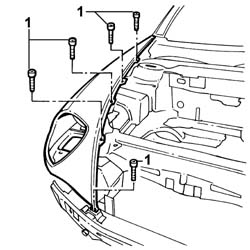
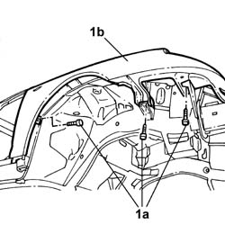

7210E18 FRONT WING
- Path
- Procedures > 72 panels and frames > 7210 REMOVING REFITTING > 7210E EXTERNAL PARTS > 7210E18 FRONT WING
- Kind
- repair procedure (removal / refitting; the operation number is the code)
- Applies to
- all engines; all production periods
- Interactive page
- https://sloeber94.github.io/elrnDB-lThss/en/#/501146
Applies to: all engines; all production periods
Applies to: all engines; all production periods
 Removing
Removing
 Refitting
Refitting- Check that the connected components are not distorted by checking the bodyshell alignment figures using suitable equipment (gauges, templates, jigs).
1. Undo the upper retaining bolts.

Applies to: all engines; all production periods
1. Undo the wheel arch fixing bolts (1a) and remove the wing (1b).

Applies to: all engines; all production periods
Refitting
Removing- Position the wing and tighten the upper fixing bolts.
- Tighten the wheel arch fixing bolts.